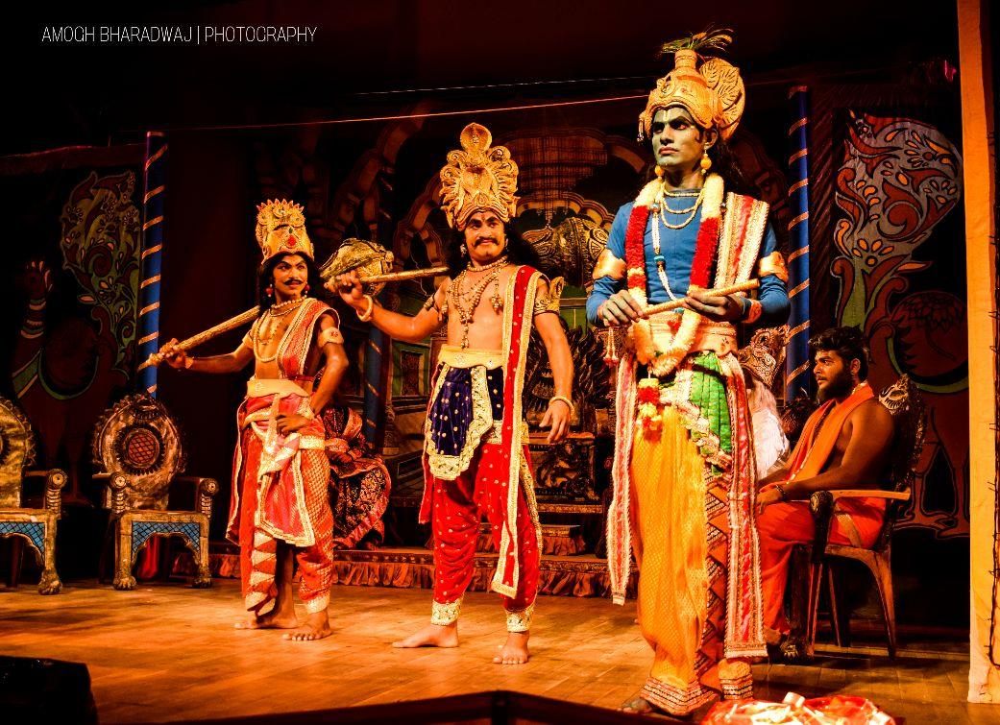
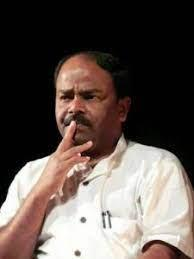

Sathyashodhana Ranga Samudaya
A cultural trust from Heggodu, Sagara taluk, Shivamogga district, Karnataka.
Our story
Sathyashodhana Ranga Samudaya, formerly known as Janamanadata, is a cultural trust founded and registered in October 2015. It grew out of Janamanadata, a theatre group formed in May 2005, which continues as the trust’s theatre division.
The trust has two aims. The first is to work toward liberty, equality, fraternity and social justice. The second, more practical one is to give young theatre activists a place to develop their craft and art.
Between 2005 and 2021 Janamanadata staged 713 performances in and outside Karnataka. Its productions are designed to work in very different spaces, whatever the stage size, seating or infrastructure.

Our productions
The productions include original Kannada plays, Kannada translations and adaptations of literary works from other languages. Oorukeri, Baduku Bayalu, Sathyashodhaka, Babasaheb Ambedkar and Kurukshethra are regarded as landmark works in Kannada theatre.
- Shraddha mattu Hanate
- Uchalya
- Rahasya Vishwa
- Tabarana Kathe
- Babasaheb Ambedkar
- Sooryana Kudure
- Oorukeri
- Baduku Bayalu
- Sathyashodhaka
- Odiri
- Kurukshethra
Recent seasons
Kurukshethra on tour across Karnataka
Kurukshethra returned by popular demand and toured from April 2018 to March 2019, from Shivamogga and Mysore to Gadag, Badami, Udupi, Mangalore and Bengaluru, including Ranga Shankara. By the end of the season the troupe had given 685 shows.
Another season of Kurukshethra
The production toured again in April–May 2019, taking the total to 707 performances and about 70,800 km travelled.
Our shortest tour, during the pandemic
Covid-19 restrictions meant rehearsals were possible only in January 2021 and allowed just 6 shows between January and March 2021, our shortest season. The total rose to 713 performances.

Dr. M. Ganesha
Dr. M. Ganesha holds a Master’s in Kannada from Bangalore University and trained at the Ninasam Theatre Institute, Heggodu, where he later joined the faculty. He received a doctorate from Kuvempu University for his thesis Kannada Rangabhoomiya Hosa Sadhyathegalu (New possibilities in Kannada theatre).
An actor, director and organiser, he has worked with Ninasam Tirugata, Charaka, Kinnaramela, Protheo, Spandana, Kagodu Rangamancha and Navu Mandya. He received the Sangeet Natak Akademi’s Ustad Bismillah Khan Yuva Puraskar (2007) and Best Actor awards for the film Dhali at the Bellimandala and Ambegalu film festivals. He was Director of Rangayana, Shivamogga (June 2017 – September 2019) and is Principal of the Ninasam Theatre Institute, Heggodu.
From the director’s note
“In my native place Timmappana Halli and the surrounding villages, I enjoyed watching Kurukshethra, Ramayana, Danashuraveerakarna and Rajavikrama, performed every year… The mud from the wells being dug was our make-up, bamboo sticks were our bows and arrows, the lakes became rivers and seas, the greenery a dense forest — and we were the characters of the Ramayana and Mahabharatha. I never thought the games we played as kids would become the texts for my future studies.” — Dr. M. Ganesha, Director, Kurukshethra
The Janamanadata troupe
Actors: Y. Manjunath, Nagaraj Sirsi, Uma Y. G., Halebasappa, Manjappa Huligi, Shivaraja, Vani Reddy, Poornima, Sathish Chauhan, Basavaraj, Kriyappa Kavaluru, Dingri Naresh, Peerappa H. Doddamani, Naveen Prathap, Rajath, Shruthi V., Mahantesh, Durga.
Technical help: Manju Kodagu, Arun Kumar M., Dingri Naresh, Shrinivasamurthy, Sundaresh, Y. Manjunath, Vidya Shivamogga, Ranganath, Shrikanth, Sujatha, Sriharsha Gobhat, Phaniyamma.
Music: Arun Kumar M. · Music operation: Ravikumar Benni, Bharath Dingri, Raghava Kammar, Basavaraj · Lighting: Satish Chauhan.
Achievements
- A theatre repertory producing plays continuously since 2005.
- Tours most of Karnataka every year, and sometimes beyond the state.
- An average of 500 people at every show.
- In Mandya district alone, public demand led to 15 shows, with around 1,500 people at each Kurukshethra performance. Hosts sometimes built their own sets for us.
- Has worked with well-regarded directors from within and outside Karnataka.
- Proper accounts, photographs, videos, press clippings and reviews kept for every year.
Other programmes
The trust has also prepared a training manual on Traditional Bone Setting for a training course on the management of Colles fractures. It is meant for traditional bone setters and for graduate and postgraduate students, and covers:
Fracture & diagnosis
Understanding fractures and how they are diagnosed.
Principles of management
Principles and methods of managing fractures.
Colles fracture
Treatment methods and procedures for managing Colles fracture.